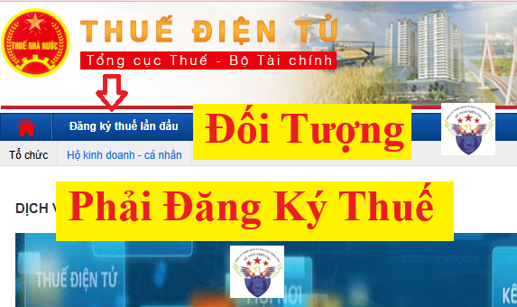

Những đối tượng phải đăng ký thuế được quy định tại điều 4 của Thông tư 86/2024/TT-BTC quy định về đăng ký thuế có hiệu lực từ ngày 06/02/2025
Theo đó thì đối tượng đăng ký thuế bao gồm:
a) Người nộp thuế thuộc đối tượng thực hiện đăng ký thuế thông qua cơ chế một cửa liên thông theo quy định tại điểm a khoản 1 Điều 30 Luật Quản lý thuế.
Trong đó:
Điều 30. Đối tượng đăng ký thuế và cấp mã số thuế
1. Người nộp thuế phải thực hiện đăng ký thuế và được cơ quan thuế cấp mã số thuế trước khi bắt đầu hoạt động sản xuất, kinh doanh hoặc có phát sinh nghĩa vụ với ngân sách nhà nước. Đối tượng đăng ký thuế bao gồm:
a) Doanh nghiệp, tổ chức, cá nhân thực hiện đăng ký thuế theo cơ chế một cửa liên thông cùng với đăng ký doanh nghiệp, đăng ký hợp tác xã, đăng ký kinh doanh theo quy định của Luật Doanh nghiệp và quy định khác của pháp luật có liên quan;
b) Người nộp thuế thuộc đối tượng thực hiện đăng ký thuế trực tiếp với cơ quan thuế theo quy định tại điểm b khoản 1 Điều 30 Luật Quản lý thuế.
Trong đó:
Điều 30. Đối tượng đăng ký thuế và cấp mã số thuế
1. Người nộp thuế phải thực hiện đăng ký thuế và được cơ quan thuế cấp mã số thuế trước khi bắt đầu hoạt động sản xuất, kinh doanh hoặc có phát sinh nghĩa vụ với ngân sách nhà nước. Đối tượng đăng ký thuế bao gồm:
...
b) Tổ chức, cá nhân không thuộc trường hợp quy định tại điểm a khoản này thực hiện đăng ký thuế trực tiếp với cơ quan thuế theo quy định của Bộ trưởng Bộ Tài chính.
Người nộp thuế thuộc đối tượng thực hiện đăng ký thuế trực tiếp với cơ quan thuế, bao gồm:
1. Doanh nghiệp hoạt động trong các lĩnh vực chuyên ngành không phải đăng ký doanh nghiệp qua cơ quan đăng ký kinh doanh theo quy định của pháp luật chuyên ngành (sau đây gọi là Tổ chức kinh tế).
Những đối tượng phải đăng ký thuế được quy định tại điều 4 của Thông tư 86/2024/TT-BTC quy định về đăng ký thuế có hiệu lực từ ngày 06/02/2025
Theo đó thì đối tượng đăng ký thuế bao gồm:
a) Người nộp thuế thuộc đối tượng thực hiện đăng ký thuế thông qua cơ chế một cửa liên thông theo quy định tại điểm a khoản 1 Điều 30 Luật Quản lý thuế.
Trong đó:
Điều 30. Đối tượng đăng ký thuế và cấp mã số thuế
1. Người nộp thuế phải thực hiện đăng ký thuế và được cơ quan thuế cấp mã số thuế trước khi bắt đầu hoạt động sản xuất, kinh doanh hoặc có phát sinh nghĩa vụ với ngân sách nhà nước. Đối tượng đăng ký thuế bao gồm:
a) Doanh nghiệp, tổ chức, cá nhân thực hiện đăng ký thuế theo cơ chế một cửa liên thông cùng với đăng ký doanh nghiệp, đăng ký hợp tác xã, đăng ký kinh doanh theo quy định của Luật Doanh nghiệp và quy định khác của pháp luật có liên quan;
b) Người nộp thuế thuộc đối tượng thực hiện đăng ký thuế trực tiếp với cơ quan thuế theo quy định tại điểm b khoản 1 Điều 30 Luật Quản lý thuế.
Trong đó:
Điều 30. Đối tượng đăng ký thuế và cấp mã số thuế
1. Người nộp thuế phải thực hiện đăng ký thuế và được cơ quan thuế cấp mã số thuế trước khi bắt đầu hoạt động sản xuất, kinh doanh hoặc có phát sinh nghĩa vụ với ngân sách nhà nước. Đối tượng đăng ký thuế bao gồm:
...
b) Tổ chức, cá nhân không thuộc trường hợp quy định tại điểm a khoản này thực hiện đăng ký thuế trực tiếp với cơ quan thuế theo quy định của Bộ trưởng Bộ Tài chính.
Người nộp thuế thuộc đối tượng thực hiện đăng ký thuế trực tiếp với cơ quan thuế, bao gồm:
1. Doanh nghiệp hoạt động trong các lĩnh vực chuyên ngành không phải đăng ký doanh nghiệp qua cơ quan đăng ký kinh doanh theo quy định của pháp luật chuyên ngành (sau đây gọi là Tổ chức kinh tế).
2. Đơn vị sự nghiệp, tổ chức kinh tế của lực lượng vũ trang, tổ chức kinh tế của các tổ chức chính trị, chính trị-xã hội, xã hội, xã hội-nghề nghiệp hoạt động kinh doanh theo quy định của pháp luật nhưng không phải đăng ký doanh nghiệp qua cơ quan đăng ký kinh doanh; tổ chức của các nước có chung đường biên giới đất liền với Việt Nam thực hiện hoạt động mua, bán, trao đổi hàng hóa tại chợ biên giới, chợ cửa khẩu, chợ trong khu kinh tế cửa khẩu; văn phòng đại diện của tổ chức nước ngoài tại Việt Nam; tổ hợp tác được thành lập và tổ chức hoạt động theo quy định tại Nghị định số 77/2019/NĐ-CP ngày 10/10/2019 của Chính phủ về tổ hợp tác nhưng không thuộc trường hợp đăng ký kinh doanh qua cơ quan đăng ký kinh doanh theo quy định tại khoản 2 Điều 107 Luật Hợp tác xã (sau đây gọi là Tổ chức kinh tế).
3. Tổ chức được thành lập bởi cơ quan có thẩm quyền không có hoạt động sản xuất, kinh doanh nhưng phát sinh nghĩa vụ với ngân sách nhà nước (sau đây gọi là Tổ chức khác).
4. Tổ chức, cá nhân nước ngoài và tổ chức ở Việt Nam sử dụng tiền viện trợ nhân đạo, viện trợ không hoàn lại của nước ngoài mua hàng hóa, dịch vụ có thuế giá trị gia tăng ở Việt Nam để viện trợ không hoàn lại, viện trợ nhân đạo; các cơ quan đại diện ngoại giao, cơ quan lãnh sự và cơ quan đại diện của tổ chức quốc tế tại Việt Nam thuộc đối tượng được hoàn thuế giá trị gia tăng đối với đối tượng hưởng ưu đãi miễn trừ ngoại giao; Chủ dự án ODA thuộc diện được hoàn thuế giá trị gia tăng, Văn phòng đại diện nhà tài trợ dự án ODA, tổ chức do phía nhà tài trợ nước ngoài chỉ định quản lý chương trình, dự án ODA không hoàn lại (sau đây gọi là Tổ chức khác).

5. Tổ chức nước ngoài không có tư cách pháp nhân tại Việt Nam, cá nhân nước ngoài hành nghề độc lập kinh doanh tại Việt Nam phù hợp với pháp luật Việt Nam có thu nhập phát sinh tại Việt Nam hoặc có phát sinh nghĩa vụ thuế tại Việt Nam (sau đây gọi là Nhà thầu nước ngoài, nhà thầu phụ nước ngoài).
6. Nhà cung cấp ở nước ngoài không có cơ sở thường trú tại Việt Nam, cá nhân nước ngoài không cư trú tại Việt Nam có hoạt động kinh doanh thương mại điện tử, kinh doanh dựa trên nền tảng số và các dịch vụ khác với tổ chức, cá nhân ở Việt Nam (sau đây gọi là Nhà cung cấp ở nước ngoài).
7. Doanh nghiệp, tổ chức, cá nhân có trách nhiệm khấu trừ và nộp thuế thay cho người nộp thuế khác phải kê khai và xác định nghĩa vụ thuế riêng so với nghĩa vụ của người nộp thuế theo quy định của pháp luật về quản lý thuế (trừ cơ quan chi trả thu nhập khi khấu trừ, nộp thay thuế thu nhập cá nhân); Ngân hàng thương mại, tổ chức cung ứng dịch vụ trung gian thanh toán hoặc tổ chức, cá nhân được nhà cung cấp ở nước ngoài ủy quyền có trách nhiệm kê khai, khấu trừ và nộp thuế thay cho nhà cung cấp ở nước ngoài (sau đây gọi là Tổ chức, cá nhân khấu trừ nộp thay). Tổ chức chi trả thu nhập khi khấu trừ, nộp thay thuế thu nhập cá nhân sử dụng mã số thuế đã cấp để khai, nộp thuế thu nhập cá nhân khấu trừ, nộp thay.
8. Người điều hành, công ty điều hành chung, doanh nghiệp liên doanh, tổ chức được Chính phủ Việt Nam giao nhiệm vụ tiếp nhận phần được chia của Việt Nam thuộc các mỏ dầu khí tại vùng chồng lấn, nhà thầu, nhà đầu tư tham gia hợp đồng dầu khí, công ty mẹ - Tập đoàn Dầu khí Quốc gia Việt Nam đại diện nước chủ nhà nhận phần lãi được chia từ các hợp đồng dầu khí.
9. Hộ gia đình, cá nhân có hoạt động sản xuất, kinh doanh hàng hóa, dịch vụ theo quy định của pháp luật nhưng không phải đăng ký hộ kinh doanh qua cơ quan đăng ký kinh doanh theo quy định của Chính phủ về hộ kinh doanh; cá nhân kinh doanh của các nước có chung đường biên giới đất liền với Việt Nam thực hiện hoạt động mua, bán, trao đổi hàng hóa tại chợ biên giới, chợ cửa khẩu, chợ trong khu kinh tế cửa khẩu.
10. Cá nhân có thu nhập thuộc diện chịu thuế thu nhập cá nhân (trừ cá nhân kinh doanh).
11. Cá nhân là người phụ thuộc theo quy định của pháp luật về thuế thu nhập cá nhân.
12. Tổ chức, cá nhân được cơ quan thuế ủy nhiệm thu.
13. Tổ chức, hộ gia đình và cá nhân khác có nghĩa vụ với ngân sách nhà nước.
| Lưu ý: |
|
Theo khoản 2 điều 38 của Thông tư 86/2024/TT-BTC thì:
Mã số thuế do cơ quan thuế cấp cho cá nhân, hộ gia đình, hộ kinh doanh được thực hiện đến hết ngày 30/6/2025. Kể từ ngày 01/7/2025, người nộp thuế, cơ quan quản lý thuế, cơ quan, tổ chức, cá nhân khác có liên quan đến việc sử dụng mã số thuế theo quy định tại Điều 35 Luật Quản lý thuế thực hiện sử dụng số định danh cá nhân thay cho mã số thuế.
|
|
Vậy là:
Số định danh cá nhân được sử dụng thay cho mã số thuế cá nhân từ 01/7/2025
Ngày 23/12/2024, Bộ trưởng Bộ Tài chính ban hành Thông tư 86/2024/TT-BTC quy định về đăng ký thuế, trong đó có nội dung sẽ dùng số định danh cá nhân thay cho mã số thuế cá nhân.
Số định danh cá nhân được sử dụng thay cho mã số thuế cá nhân
Theo đó, một trong những nội dung đáng chú ý tại Thông tư 86/2024/TT-BTC (thay thế Thông tư 105/2020/TT-BTC từ ngày 06/02/2025) quy định từ ngày 01/7/2025 mã số thuế dành cho hộ gia đình, hộ kinh doanh, cá nhân là mã số thuế do cơ quan thuế cấp đối với các trường hợp theo quy định; là số định danh cá nhân do Bộ Công an cấp theo quy định của pháp luật về căn cước đối với trường hợp sử dụng số định danh cá nhân thay cho mã số thuế theo quy định.
Số định danh cá nhân của công dân Việt Nam do Bộ Công an cấp theo quy định của pháp luật về căn cước là dãy số tự nhiên gồm 12 chữ số được sử dụng thay cho mã số thuế của người nộp thuế là cá nhân, người phụ thuộc quy định tại điểm k, l, n khoản 2 Điều 4 Thông tư 86/2024; đồng thời, số định danh cá nhân của người đại diện hộ gia đình, đại diện hộ kinh doanh, cá nhân kinh doanh cũng được sử dụng thay cho mã số thuế của hộ gia đình, hộ kinh doanh, cá nhân kinh doanh đó.
|
Công ty đào tạo Kế Toán Diệu Tâm mời các bạn tham khảo thêm bài viết: